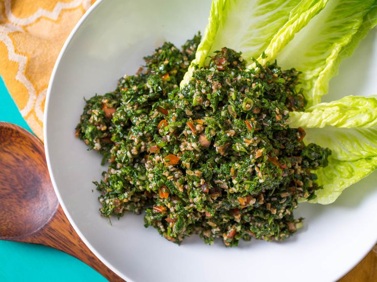

Who doesn't love hummus? You can put this on anything like sandwiches, salads, wraps, or even eat it plain!
With an easy to make and no bake recipe, this authentic lebanese dish will have everyone's attention
at the dinner table guaranteed.
Fun fact, did you know falafel is made from chick peas?
Yup you heard that right, just like hummus, falafel is practically made entirely out of chick peas.
This recipe requires some time, but the wait is worth it!

Tabbouleh is a Mediterranean salad. Unlike majority of salads, tabbouleh is mainly parsley and bulgar, but it is eaten with lettuce sometimes.
This salad is a great addition served with Hummus and Falafel.